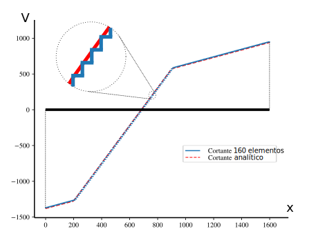

Aplicação na mão
Bom, agora que conhecemos o equilíbrio estático dado pelo MEF e a matriz de rigidez do elemento de viga de Euler-Bernoulli, vamos voltar a viga da ponte preta e resolvê-la na mão. Lembrando que nossa viga foi definida com um comprimento total de 16 m, uma viga metálica tipo I soldada de 145 cm de altura, 50 cm de largura nas mesas e 3 cm de espessura nas mesas e alma (medidas muito aproximadas), com enrijecedores de alma para o cisalhamento espaçados de 1,7 m aproximadamente, simplesmente apoiada. Temos 52,8 kN/m de carga permanente, $g$ (peso próprio + distribuição de cargas fixas do pavimento) e 211 kN/m como peso idealizado de uma locomotiva antiga de 7 m de comprimento, $q$, parada à uma distância $d$ de 7 m da borda esquerda da ponte

O aço utilizado na construção dos elementos da ponte preta era o... o... pois é, digamos que foi o CG-26 ($E = 200 GPa$, $f_y = 250 MPa$ e $f_u = 400 MPa$).
Graus de liberdade da estrutura
Primeiro, vamos descrever todos os graus de liberdade globais da viga idealizada em um diagrama de corpo livre, assim como numerar seus nós e suas barras.
A numeração dos nós, barras e graus de liberdade pode ser qualquer, porém, por questões práticas de implementação computacional sempre iniciam em 1, nunca pula-se um número e para os graus de liberdade numeram-se primeiro as direções com graus de liberdade livre, ou seja, direções as quais os apoios não influenciam.
Antes de continuarmos, preste atenção na discretização que você acabou de fazer. Observe que temos um carregamento distribuído ao longo da viga, $g$, e um carregamento distribuído, $q$, em apenas parte da viga. Temos duas saídas aqui: primeiro podemos discretizar a viga em mais elementos, um para o primeiro trecho que vai até o ínicio da carga $q$, outro sob a carga $q$ e por fim um terceiro que vai do final da carga $q$ até a outra extremidade da viga, o que resultaria em:
Ou então, manteríamos a viga discretizada com apenas um elemento e precisaríamos escrever um vetor de forças nodais equivalentes que conseguisse representar através de cargas, que calcularíamos nos nós, o efeito do carregamento distribuído em parte da viga.
Os matemáticos dizem "integral, integral...", os engenheiros dizem "discretiza logo que o projeto é para ontem..."
Se discretizarmos vamos acabar com uma matriz de rigidez de 6x6, se calcularmos a vetor de forças nodais equivalentes com uma matriz de rigidez de 2x2. E agora, o que você escolhe?
Discretizar por que eu só aprendi a calcular um vetor de forças nodais equivalentes para a carga distribuída e tenho medo de integrais!
Matematicamente, vamos descrever a numeração dos graus de liberdade através da matriz de graus de liberdade, $\textbf{GL}$. Nessa matriz contamos as linhas como sendo a numeração dos nós, ou seja, a linha 1 é relativa ao nó 1, a 2 ao nó 2 e assim por diante, e as colunas relativas à direções definidas para os graus de liberdade, ou seja, no plano a coluna 1 é translação em $X$ e a coluna 2 é rotação em torno de $Z$. Então populamos essa matriz com os números dos graus de liberdade relativos a cada nó (linhas da matriz) de acordo com cada direção dos graus de liberdade (colunas da matriz), ou seja, para nosso exemplo:
Graus de liberdade dos elementos
Na sequência precisamos explodir a estrutura dividindo-a em elementos de viga e para cada elemento descrever os graus de liberdade do elemento. A numeração dos nós do elemento é fundamentada no utilizado para sua formulação, como foram dois, sempre teremos nós 1 e 2.
A numeração dos graus de liberdade nesse caso é fixa à numeração do nó, pois foi seguindo essa ordem que derivamos a matriz de rigidez. Portanto, para o nó 1, o grau de liberdade transversal à barra é o 1, o de rotação, 2, para o nó 2, o transversal é o 3 e o de rotação 4. No caso da viga sempre vamos posicionar o nó 1 do elemento como sendo a direita na estrutura e o nó 2 do elemento à esquerda, caso contrário precisaríamos aplicar uma rotação na matriz de rigidez do elemento.
Matematicamente, escrevermos a relação dos nós locais dos elementos com os globais da estrutura através da matriz de incidência do elemento, $\textbf{IE}$, na qual as linhas representam os números dos elementos, a primeira coluna representa o nó na estrutura escolhido para o posicionamento do nó 1 do elemento e a segunda coluna do nó na estrutura para o posicionamento do nó 2 do elemento. Para o nosso caso, a matriz $IE$ fica:
No caso de elementos com mais nós, a matriz de incidência deve seguir uma ordem pré-definida de posicionamentos, com o número de colunas igual ao número de nós do elemento.
Ângulo de rotação das barras
O ângulo $\theta$ é sempre utilizado no caso de vigas como sendo igual à $0^o$, por isso é importante manter a mesma posição dos nós 1 e 2 do elemento na estrutura sem inverter, caso contrário o $\theta=180^o$ e precisaríamos rotacionar a matriz de rigidez.
Determinação das matrizes de rigidez globais dos elementos
Das determinações anteriores, sabemos que a matriz de rigidez de um elemento de treliça no sistema global é idêntica a sua matriz de rigidez no sistema local. Portanto, para a viga de Euler-Bernoulli nos temos:
Portanto, podemos escrever as matrizes de rigidez no sistema global de todos os três elementos da estrutura. Atenção às constantes $E$ e $I_z$ são constantes para todos os elementos e os comprimentos $L$ variam de elemento para elemento.
Sendo a viga de aço CG-26, $E = 200000 MPa = 20000 kN/cm^2$. A seção transversal é um I, portanto suas propriedades de inércia $I_z$ são calculadas em função das dimensões da seção transversal.
No nosso exemplo, $d = 145 cm$, $b_f = 50 cm$, $t_w = t_f = 3 cm$ e por consequência, $h = 139 cm$, que resultam em:
Os comprimentos dos elementos são $L_1 = 200 cm$, $L_2 = 700 cm$ e $L_3 = 700 cm$. Então, as matrizes de rigidez de cada elemento resultam em:
Elemento 1:
Elemento 2:
Elemento 3:
Como as cargas nos elementos também são diferentes, precisamos montar o vetor de cargas nodais equivalentes para cada elemento.
Determinação do vetor de forças nodais globais dos elementos
Vamos recordar que o vetor de forças nodais equivalentes pode ser escrito como a força aplicada em cada nó. No caso da viga, fizemos isso na teoria utilizando as funções de forma o que resultou para cada elemento no sistema em:
Atenção
Observe que esse vetor de forças nodais equivalentes somente funciona se o elemento estiver na horizontal e $g$ for constante em $r$ ou $X$ e perpendicular ao elemento na direção $s$ ou $Y$. $g$ foi considerado positivo no mesmo sentido dos eixos $s$ ou $Y$. Além disso, precisamos converter os valores das cargas $g$ de 52,8 kN/m e $q$ de 211 kN/m para kN/cm para manter a consistência nas unidades: $g = 0,528 \ kN/cm$ e $q = 2,11 \ kN/cm$.
Portanto, o vetor de forças nodais equivalentes para cada elemento, substituindo o respectivo $l$ e o valor da respectiva carga $g$ ou $g+q$ é:
Elemento 1:
Elemento 2:
Elemento 3:
Agora precisamos criar a matriz de rigidez e o vetor de forças nodais equivalentes da estrutura como um todo, acoplando as matrizes de rigidez globais dos elementos da mesma forma que as barras estão conectadas, para garantir a correta distribuição das rigidezes nos graus de liberdade da estrutura.
Indexação dos elementos
Novamente utilizaremos nossa regrinha simples de endereçamento, chamada indexação do elemento. Lembrando que a ideia dessa regra é relacionar os graus de liberdade do elemento no sistema global com os graus de liberdade da estrutura também no sistema global, utilizando a matriz dos graus de liberdade, $\textbf{GL}$, e a matriz de incidência dos elementos, $\textbf{IE}$. O endereçamento é feito pelo nosso vetor indexador.
O indexador, ou $ID$, possui uma quantidade de elementos igual ao número total de graus de liberdade do elemento, então, no nosso caso, como temos dois graus de liberdade por nó e dois nós no elemento, o vetor indexador terá 4 elementos. Os dois primeiros elementos do indexador se relacionam com o nó da estrutura correspondente ao nó 1 do elemento, e os dois últimos ao nó da estrutura correspondente ao nó 2 do elemento (no nosso caso, para o elemento de treliça, claro que isso muda com o tipo de elemento). Por exemplo, o nó 1 do elemento 3 é o nó 3 na estrutura.
A construção do indexador é feita para cada barra com uma busca por elementos da matriz dos graus de liberdade, $\textbf{GL}$, de acordo com a matriz de incidência, $\textbf{IE}$, em função das direções $X$ e $Y$. De uma forma genérica, para o elemento de treliça plana, podemos escrever o indexador como:
Sendo b o número da barra. Observe que $IE_{b,1}$ são linha b e coluna 1 da matriz de incidência $\textbf{IE}$ e que $GL_{IE_{b,1},1}$ são linha $IE_{b,1}$ e coluna 1 da matriz de graus de liberdade $\textbf{GL}$.
O indexador nada mais é que um identificador das linhas e colunas das matrizes dos elementos no sistema global na matriz de rigidez da estrutura no sistema global. Portanto, no nosso exemplo, como:
Então, os indexadores para os elementos 1, 2 e 3 valem:
Observe que os valores dos indexadores são exatamente os números dos graus de liberdade da estrutura para cada um dos elementos nela discretizados.
O indexador só funciona se as matrizes dos graus de liberdade e de incidência dos elementos foram corretamente construídas. O legal da indexação do elemento é que as direções globais e os sinais já estão implícitos na formulação e saem automáticos.
Por exemplo...
No elemento 2 (barra 2), se a incidência fosse o nó 1 do elemento para o nó 2 da estrutura e o nó 2 do elemento para o nó 3 da estrutura, o ângulo do elemento seria $\theta = 270^o$, pois esse é medido da direção positiva do eixo $X$ no sentido anti-horário até o eixo $x$ longitudinal ao elemento, e o indexador seria $\lbrace 4, 3, 5, 6 \rbrace$.
Determinação da matriz de rigidez da estrutura
A montagem da matriz global segue o endereçamento dado pelo indexador. Na prática é bem simples, basta colocar os valores determinados nos indexadores nas linhas e colunas das matrizes de rigidez dos elementos no sistema global. Esses valores são as novas linhas e colunas de cada elemento dessas matrizes na matriz de rigidez da estrutura.
Agora basta montar a matriz de rigidez da estrutura transportando os respectivos valores das linha e colunas para a sua correta posição dada pelo indexador na matriz do elemento. Se dois valores caírem na mesma posição, bastá somá-los, é assim que acoplamos os elementos e montamos a estrutura matematicamente.
Determinação do vetor de forças nodais equivalentes da estrutura
Da mesma forma que criamos a matriz de rigidez da estrutura nos vamos criar o vetor de forças nodais equivalentes utilizando a indexação dos elementos. Os valores de cada indexador nos vetores de forças dos elementos são as linhas do vetor de forças nodais equivalentes da estrutura.
O vetor de forças nodais equivalentes da estrutura é montado simplesmente transportando os valores dos vetores dos elementos de acordo com a indexação de cada elemento. No caso de mais de uma força ser indexado pelo mesmo velor as duas devem ser somadas.
Deslocamentos e forças nodais
O equilíbro estático da estrutura em MEF é regido pela mesma expressão que utilizamos para o equilíbrio do elemento englobando todos os graus de liberdade da estrutura, ou seja, o equilíbrio estático da estrutura pelo MEF é dado pela equação:
Sendo $\textbf{U}$ o vetor de deslocamentos da estrutura e $\textbf{F}$ o vetor de forças nodais da estrutura.
Por que é válida a mesma consideração local do elemento (lembra, princípio dos trabalhos virtuais, deslocamentos virtuais, etc...) para toda a estrutura globalmente?
Os vetores $\textbf{U}$ e $\textbf{F}$ representam os deslocamentos da estrutura, definidos pelos graus de liberdade, e as forças nodais relativas aos graus de liberdade. Portanto, podemos escrevê-los de forma genérica como:
Não sabemos, por enquanto, os valores dos deslocamentos em cada grau de liberdade do vetor $\textbf{U}$, afinal essas são as nossa incógnitas do problema (quer dizer, alguns valores nos conhecemos como veremos a seguir). Já o vetor de forças nodais $\textbf{F}$ nós conhecemos completamente, basta entender como as forças nodais se relacionam com os graus de liberdade e aplicar as condições de contorno.
Aplicando as condições de contorno
Como você já sabe a matriz $\textbf{K}$ tem algumas importantes propriedades, ela deve ser simétrica e singular, ou seja, com o determinante igual a zero e não inversível. Então, para resolver o equilíbrio estático do MEF $\textbf{K}\textbf{U}=\textbf{F}$ precisamos aplicar as condições de contorno.
Observe que na matriz de rigidez da estrutura, $\textbf{K}$, as linhas e colunas representam os graus de liberdade da estrutura contendo a rigidez referente ao efeito de certo grau em outro. Sendo assim, para aplicar as condições de contorno do problema, que são os apoios simples e rotulado, basta observarmos quais graus de liberdade esses apoios influenciam e aplicar essa influência na matriz de rigidez da estrutura, no vetor de deslocamentos da estrutura e no vetor de forças nodais da estrutura.
Da imagem notamos que o apoio simples influencia o grau de liberdade 8 apenas e que o apoio rotulado influencia o grau de liberdade 7, o que significa que nas posições desses graus de liberdade no vetor de forças nodais equivalentes da estrutura ainda precisamos levar em conta as reações de apoio. Sabendo disso, podemos montar nossos vetores de deslocamentos nodais $\textbf{U}$ como:
E o vetor de forças nodais equivalentes $\textbf{F}$ da estrutura como:
Os deslocamentos $U_7$ e $U_8$ são iguais à zero pelas restrições dos apoios nas respectivas direções dos graus de liberdade relacionados à esses deslocamentos. As forças $F_7$ e $F_8$ são relacionadas com as restrições impostas pelos apoios nas respectivas direções dos graus de liberdade e, portanto, dever ser somadas às reações de apoio, ainda desconhecidas, provocadas por essas restrições. Portanto, nosso equilíbrio se escreve:
Somente foi possível separar os deslocamentos colocando os 6 primeiros como as incógnitas do problema e os 2 últimos restringidos pelas condições de contorno dadas pelos apoios (o mesmo com as forças nodais, mas ao contrário) por que numeramos primeiro os graus de liberdade livres da estrutura e construímos a matriz dos graus de liberdade, $\textbf{GL}$, em função disso. De outra forma, precisaríamos aplicar uma mudança de linhas e colunas na matriz de rigidez e de linhas aos vetores de deslocamentos e forças para chegar a esse resultado, sem o qual, não poderíamos resolver o sistema aplicando a separação das variáveis.
Separação das variáveis
Da mesma forma que fizemos na treliça, observe bem a equação matricial de equilíbrio que escrevemos acima e tente visualizar na forma de um sistema de equações. Note que as duas últimas colunas da matriz de rigidez sempre estão multiplicadas por zero, ou seja, não influenciam em nada na resolução do nosso sistema. Então, como primeira simplificação, podemos reescrever o equilíbrio estático dado pelo MEF da nossa treliça de três barras como:
Além disso, veja que as seis primeiras linhas da matriz de rigidez simplificada são responsáveis pela determinação dos deslocamentos incógnitos, visto que se iguala a forças nodais conhecidas e que, as duas últimas linhas da matriz de rigidez simplificada são responsáveis pela determinação das reações de apoio em função dos deslocamentos já determinados. Ou seja, podemos separar a matriz de rigidez simplificada e consequentemente nosso equilíbrio estático em:
Para cálculo dos deslocamentos, que pode ser reescrita de forma compacta em:
Sendo $\textbf{K}_U$ a porção da matriz de rigidez responsável pelo cálculo dos deslocamentos, $\textbf{U}_U$ a porção do vetor de deslocamentos nodais com as incógnitas e $\textbf{F}_U$ a porção do vetor de forças nodais com as forças aplicadas em graus de liberdade livres. Para as reações de apoio:
ou
Que pode ser reescrita de forma compacta em:
Sendo $\textbf{K}_R$ a porção da matriz de rigidez para cálculo das reações de apoio, $\textbf{R}$ a porção do vetor de forças nodais com as reações de apoio incógnitas e $\textbf{F}_R$ a porção do vetor de forças nodais com as cargas aplicadas nos graus de liberdade restringidos.
Cálculo dos deslocamentos
O cálculo dos deslocamentos é feito resolvendo-se o seguinte sistema de equações mostrado anteriormente. Existem diversas formas de resolvê-lo, já que trata-se de um sistema de equações lineares com múltiplas incógnitas, possível e determinado e linearmente independente, da mesma forma que na treliça, nós vamos utilizar a fatoração de Cholesky por ser mais rápida para sistemas com vários graus de liberdade.
Portanto, para o nosso caso com a matriz $\textbf{K}$ com $n=6$, ou seja, $6 \times 6$:
Aplicando a decomposição em triângular superior e inferior, chega-se a:
Agora, para resolver precisamos aplicar uma substituição direta e uma retro substituição em $\textbf{L}$ e $\textbf{L}^T$ respectivamente. Precisamos calcular um vetor $\textbf{c}$, tal que:
Então, podemos encontrar os deslocamentos com:
Esse vetor $\textbf{c}$ é calculado da seguinte maneira, para o elemento 1 de $\textbf{c}$:
Para os demais elementos com $i=1,2,...,n$:
E, portanto, para o nosso caso, com $i=1,..,n$ e $n=6$:
A solução, então, dos deslocamentos $\textbf{U}$ pode ser calculada pela retrosubstituição em $\textbf{L}^T$, sendo o último elemento de $\textbf{U}$ calculado como:
E os demais deslocamentos com $i=1,2,...,n-1$:
E finalmente... chegamos aos valores dos deslocamentos (sendo $n=6$), resolve-se do $U_6$ ao $U_1$:
Agora, lembra-se? Deslocou o que? Metros? Centímetros? Quilômetros? E a rotação? O MEF não trabalha com unidades, portanto, todos os valores de entrada devem possuir unidades compatíveis para uso na formulação, ou seja:
As rotações sempre são calculadas em radianos.
E os valores negativos? Lembra das direções que impomos aos graus de liberdade globais, definidas nos sentidos positivos dos eixos $X$ e $Y$, então, se o deslocamento ou rotação desse positivo, significa que sua direção seria a mesma do grau de liberdade, no caso negativo, significa que a direção do deslocamento ou rotação é oposta à do grau de liberdade.
Cálculo das reações de apoio
Com os deslocamentos calculados, podemos utilizar a separação de variáveis que foi feita com a matriz de rigidez e os vetores de deslocamentos e forças nodais para calcular as reações de apoio.
Substituindo os valores dos deslocamentos.
E, portanto, após a multiplicação da porção da matriz de rigidez pelo vetor de deslocamentos nodais, chegamos à:
Ou seja, as reações de apoio nos graus de liberdade 7 do nó 1 e 8 do nó 4 valem respectivamente $R_7 = 1391,681 kN$ e $R_8 = 930,119 kN$, que significam compressão nos nós 1 e 4.
Aproximação
Lembre-se que esses resultados são aproximados! O MEF é um método de solução aproximado e a aproximação depende muito de como foi formulado o problema em relação a quantidade de elementos e quanto as funções de forma utilizadas. Em outras palavras e de forma muito superficial, se você utilizar mais elementos ou aumentar o grau do polinômio das funções de forma, você terá melhores aproximações. É, não é bem assim, existem outros fatores que influenciam na aproximação do resultado, mas para nossos problemas pode ser.
Tensões nas barras
A determinação das tensões nas barras é feita no elemento original com compatibilização dos sistemas dos graus de liberdade, ou seja, primeiro precisamos escrever os deslocamentos da estrutura como deslocamentos em cada elemento. Para isso, vamos desacoplar o vetor de deslocamentos nodais e escrever um vetor de deslocamentos globais (total, inclusive com os deslocamentos restringidos pelos apoios) para cada elemento chamados de $\textbf{u}_1$, $\textbf{u}_2$ e $\textbf{u}_3$ para os elementos 1, 2 e 3 respectivamente.
Essa montagem é feita utilizando a indexação do elemento aplicando-se o indexador ao contrário, agora os valores do indexador irão corresponder às linhas e colunas do vetor de deslocamentos da estrutura e as linhas e colunas do indexador às linhas e colunas dos vetores de deslocamentos globais dos elementos. Lembra dos indexadores para cada elemento?
Ao contrário
Aplicar o indexador ao contrário significar que o grau de liberdade definido no indexador vira o grau de liberdade do elemento no sistema global do número da linha do indexador relativa. Por exemplo, no indexador 2, do elemento 2, os graus de liberdade globais 2, 3, 4 e 5 definidos no indexador, que são os globais da estrutura, viram os graus de liberdade 1, 2, 3 e 4 respectivamente no elemento 2 no sistema global.
Portanto, sendo o vetor de deslocamentos da estrutura igual a:
Os vetores de deslocamentos dos elementos no sistema global, que são idênticos aos do sistema local, resultam em:
Idênticos
Lembre-se de que no caso da viga os graus de liberdade locais são coincidentes com os graus de liberdade globais pelo fato de não fazermos nenhuma rotação no elemento. Afinal é uma viga. Além disso, lembre-se que os graus de liberdade locais da viga são $u_a$, $u_b$, $u_c$ e $u_d$, portanto, o valor -1,354845 de $\textbf{u}_1$ é relativo ao grau de liberdade $u_c$ de $\textbf{u}_1$.
Definidos os deslocamentos dos elementos precisamos determinar as suas deformações. Para tal vamos utilizar a equação que determina as deformações com as premissas do MEF.
Lembrando que:

e:

Portanto, as deformações para cada elemento no sistema local ficam:
Elemento 1: ($l_1 = 200 cm$)
Elemento 2: ($l_2 = 700 cm$)
Elemento 3: ($l_3 = 700 cm$)
E, por fim, para calcular as tensões basta utilizar a equação constitutiva do material da viga em cada elemento.
Elemento 1: ($E_1 = 20000 kN/cm^2$)
Elemento 2: ($E_2 = 20000 kN/cm^2$)
Elemento 3: ($E_3 = 20000 kN/cm^2$)
Função de $r$ e $s$?
Sim, observe que tanto as deformações quanto as tensões (obviamente) são funções de $r$ e $s$, mas porque? Por que nossas deformações e tensões variam tanto no comprimento do elemento quanto na altura da seção transversal, veja figura Deformações na Viga.
Esforços na viga
E os esforços na viga? Momento fletor e esforço cortante? Agora é um tanto mais complexo que a treliça pois a tensão varia com o comprimento e a altura do elemento. Além disso, estamos trabalhando com uma viga metálica de um perfil I.
Momentos fletores
Vamos calcular os momentos fletores utilizando a integral na área da seção transversal das tensões na seção transversal multiplicadas por s:
Sendo o eixo $p$ o eixo local do elemento perpendicular ao plano da viga, formando o sistema local de coordenadas tridimensional $r$, $s$, $p$.
A distribuição das tensões na seção transversal não possui uma largura única, portanto a integral em $p$ deverá ser feita para a região da alma e para as mesas em separado. Como a largura é constante, essa integral resulta no próprio valor da largura da alma e mesas.
O $b_f$ está multiplicado por 2 pois iremos resolver a integral em $s$, do termo do $b_f$ para uma das mesas apenas, já que são iguais. A integral na alma percorre todo o seu comprimento $h$ e a integral das mesas toda a sua altura $t_f$. Lembrando que como a seção transversal está posicionada em referência ao eixo local, a integral das mesas inicia no final da alma, em $\frac{h}{2}$.
Resolvendo para cada elemento, utilizando a respectiva equação das tensões no elemento:
Elemento 1
Elemento 2
Elemento 3
Xiii
Pois é, percebeu algo muito chato nas equações acima? Elas são lineares e descontínuas, ou seja, não conseguem representar o momento fletor da viga corretamente, que precisaria de uma equação quadrática e não fornecem o mesmo valor nos nós da estrutura. Além disso, não zeram nos apoios.
O diagrama dos momentos na viga determinados com as equações acima é mostrado abaixo.
O valor negativo do momento é devido a formulação. No Brasil, nos utilizamos os momentos com eixo ao contrário, para justamente posicional o momento positivo na tração e o negativo na compressão (ajuda e muito em vigas de concreto armado), mas basta multiplicar por -1.
Observe que os momentos calculados são uma aproximação do momento analítico, bem grosseira nesse caso. No entanto, veja o gráfico abaixo. É o diagrama de momentos fletores para a mesma viga, porém com 160 elementos ao invés de 3.
Portanto, lembre-se o MEF é um método aproximado de solução e o importante é saber o quanto é necessário trabalhar com o método para conseguir obter uma aproximação dos resultados que seja adequada. Além da implementação com mais elementos, poderíamos obter uma melhor aproximação se utilizássemos funções de forma com um maior grau no polinômio, para isso precisaríamos de mais um nó no elemento e conseguiríamos alcançar um polinômio de grau 5, cuja segunda derivada teria grau 3 o suficiente para interpolar os momentos fletores de grau 2 de forma bem aproximada. Veja como ficaria o momento fletor com 3 elementos e 3 nós por elemento.
Exatamente igual ao analítico, pois a segunda derivada das funções de forma possuem ordem 3 que é mair que o suficiente para interpolar os momentos no elemento.
Esforço cortante
Se o momento fletor de nossa viga com três elementos já mostrou uma péssima aproximação, os esforços cortantes então são muito piores, pois são obtidos com a primeira derivada em $r$ das equações dos momentos, ou seja, possuem valores constantes onde deveriam ser lineares.
Elemento 1
Elemento 2
Elemento 3
Que resulta no diagrama de esforços cortantes:
Não se preocupe com o sinal, é apenas uma convenção. Na convenção Brasileira seria o oposto do ilustrado no gráfico. E abaixo, o diagrama de esforço cortante para a mesma viga, porém com 160 elementos ao invés de 3.

Mesmo com o refino o esforço cortante continua sendo constante por causa das funções de interpolação, por isso o diagrama escalonado. Agora, veja o gráfico abaixo. São 3 elementos também, porém com 3 nós por elemento, o que resulta em funções de forma polinomiais de grau 5.
Exatamente igual ao analítico pois a terceira derivada das funções de forma é um polinômio de ordem 2 o que é mais que o suficiente para interpolar os cortantes no elemento.